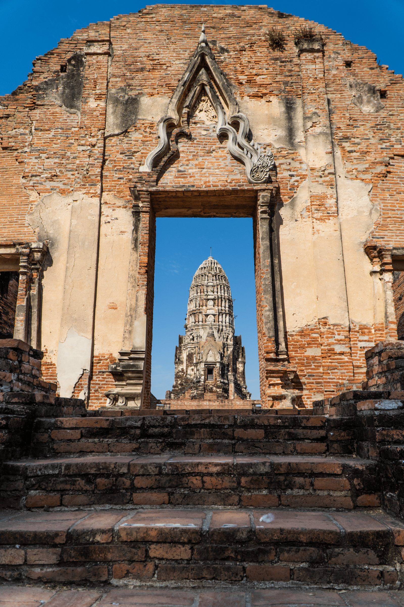
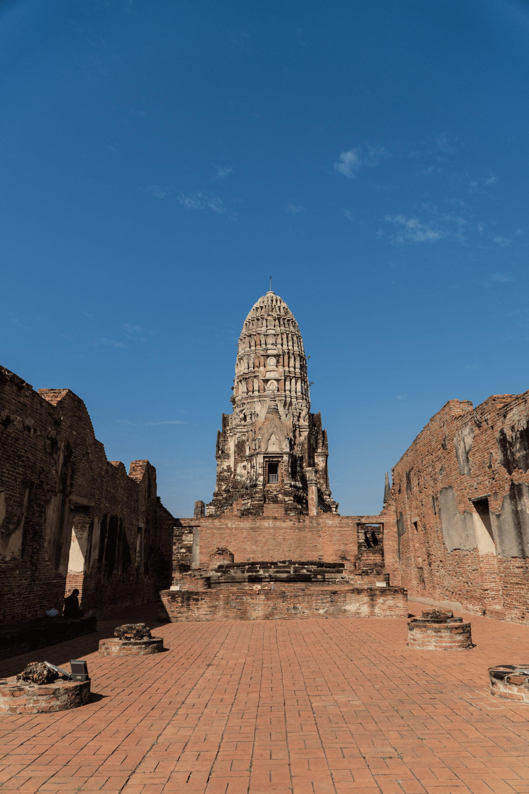
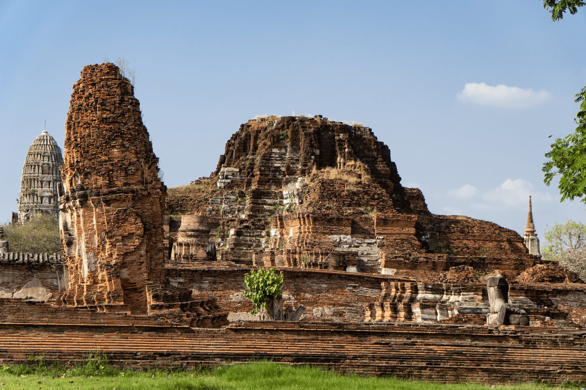
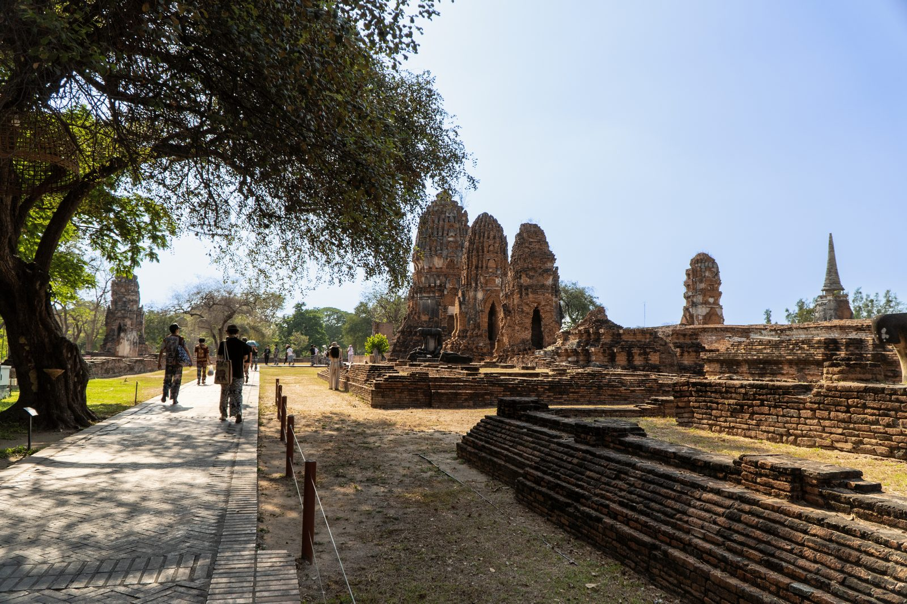
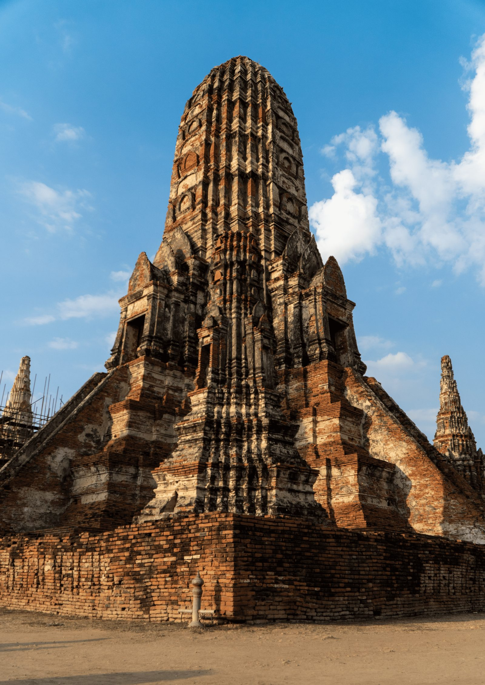
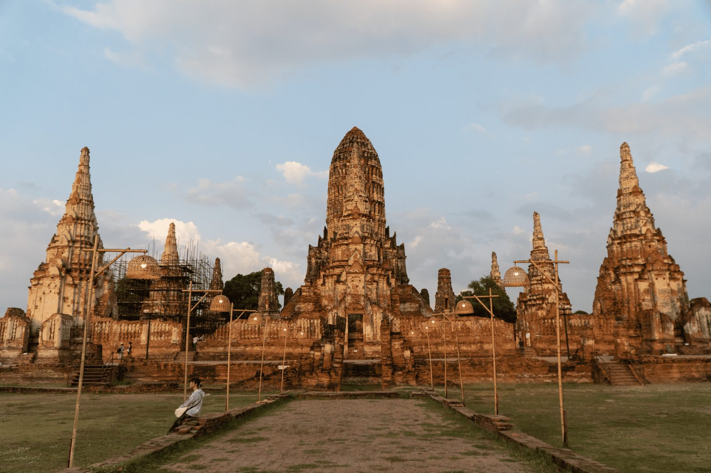

Ayutthaya: Un viaggio nel tempo tra i giganti di pietra della Thailandia
Lasciarsi alle spalle la frenesia moderna per immergersi nel silenzio solenne di un antico regno. Camminare oggi tra le rovine del Parco Storico di Ayutthaya è un'esperienza che toglie il fiato: i maestosi mattoni rossi, consumati dal tempo e dalle guerre, sembrano custodire i segreti di un'epoca d'oro splendida, sacra e lontana.
Un po' di storia: L'Impero Khmer e la nascita di Ayutthaya
Fondata nel 1350, Ayutthaya divenne la seconda gloriosa capitale del Regno di Siam dopo Sukhothai. Prima della sua ascesa, gran parte di questo territorio era sotto il controllo del potente Impero Khmer (i costruttori di Angkor Wat in Cambogia). L'influenza Khmer è visibile ancora oggi nell'architettura dei templi più antichi del sito: le maestose torri slanciate a forma di pannocchia o bocciolo di loto, chiamate Prang, nascono proprio dallo stile geometrico e cosmologico Khmer, che simboleggiava il sacro Monte Meru. Al suo apice, Ayutthaya era una delle metropoli più ricche e cosmopolite del pianeta, un crocevia commerciale globale finché non venne tragicamente rasa al suolo dall'esercito birmano nel 1767.
La simmetria reale del Wat Ratchaburana
Il nostro viaggio fotografico entra nel vivo varcando la soglia del Wat Ratchaburana, fondato nel 1424 dal re Borommarachathirat II come monumento funebre per i suoi due fratelli, morti in un duello sul dorso di un elefante per la successione al trono. Avvicinandosi alla monumentale torre centrale, si percepisce l'incredibile simmetria geometrica e l'eredità artistica lasciata dai Khmer. Attraversare i portali di pietra significa letteralmente incorniciare la storia con lo sguardo, catturando contrasti spettacolari tra il rosso caldo dell'argilla cotta e il blu limpido del cielo.


Il silenzio sacro del Wat Mahathat
Ci spostiamo successivamente verso il Wat Mahathat (il "Tempio della Grande Reliquia"), uno dei complesses religiosi più importanti e sacri dell'antico regno. Camminando lungo i viali principali fiancheggiati da file di alberi secolari e crolli imponenti, si ha la costante sensazione di esplorare un luogo in cui la natura si è fusa indissolubilmente con la storia, riappropriandosi degli spazi nudi.


È proprio qui che ci si trova faccia a faccia con il mistero più celebre e fotografato di tutta la Thailandia. Durante la distruzione della città nel 1767, i birmani decapitarono quasi tutte le statue di pietra. Una di queste teste, caduta a terra, è stata abbracciata, sollevata e protetta dalle radici rampicanti di un albero di fico sacro (l'albero della Bodhi). L'espressione serena e imperturbabile del volto del Buddha, incastonata nel legno vivo, trasmette un magnetismo e una pace spirituale indescrivibili.

La magia della Golden Hour al Wat Chaiwatthanaram
Abbiamo deciso di concludere la nostra esplorazione aspettando che il sole iniziasse la sua discesa verso l'orizzonte. Quando arriva il tardo pomeriggio, ci spostiamo sulle sponde del fiume Chao Phraya per goderci il tramonto al Wat Chaiwatthanaram. Costruito nel 1630, questo tempio dinastico riflette in pieno lo stile khmer classico, con un grande Prang centrale circondato da torri minori che descrivono la mappa dell'universo secondo la cosmologia buddista.
In questo momento della giornata il tempio cambia pelle: la luce radente colpisce i dettagli architettonici creando ombre profonde e tridimensionali che accentuano la verticalità delle torri. I mattoni spenti si accendono improvvisamente di un arancione dorato e infuocato.

Sedersi in silenzio, osservando il sole che cala dietro le guglie dei templi mentre si accendono le prime lanterne, è stato il modo perfetto per salutare questo luogo magico. Un momento di pura connessione che rimarrà impresso tra i ricordi più belli di questo viaggio.
